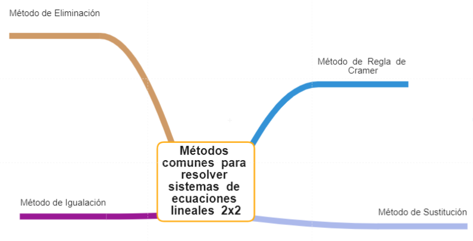

En el presente Objeto virtual de aprendizaje se presenta la temática:
Métodos de solución de sistemas de ecuaciones 2 x 2 , donde de manera fácil y practica se hace un curso guiado acerca de como resolver un sistema de ecuaciones 2x2 (dos ecuaciones y dos variables). El curso esta diseñado para que tu puedas resolver cada uno de los métodos paso a paso a través de nuestros recursos como lo son: la presentación del contenido ,un video tutorial, actividad de refuerzo y finalmente la evaluación correspondiente.
Los métodos que vamos a aprender a resolver son :
